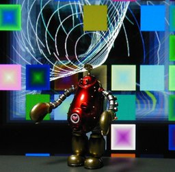
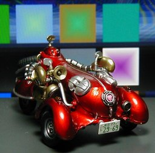
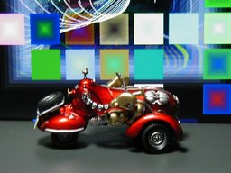

S.I.C. 匠魂 Vol. 7 ロボコン ver. 2



S.I.C. 匠魂 vol.7 のロボコンです。というよりもロボコンカーがメインのようです。ロボコンカーの長さは 8cm ぐらいです。 私は Vol. 7 の発売前から、このロボコンを狙っていたのですが、《Vol.6 ワルダー》と同じく数があるのか、人気がないのか、ハズレキャラになってしまったらしく、かなり安価に手に入れることができました。 背景は Winamp の MilkDrop プラグインを WinShot したものです。 更新：2006-04-30 初公開：2006年04月30日 01:05:16 最新版：2006年04月30日 01:05:16
Trackbacks: 《爆弾の結末》 from 美咲 恋方 まあ月末は売上が上がらなくて焦るホストが多い特に新人は売上上げないと速攻クビだ。多分今回のもそうゆう新人ホストの一人だと思う。 受信： 2006-05-02 18:25:21 (JST)
Links: S.I.C.: http://www.tamashii.jp/sic/ (hbm) Vol.6 ワルダー: http://jrf.cocolog-nifty.com/column/2006/02/post_10.html MilkDrop: http://www.milkdrop.co.uk/ (hbm) WinShot: http://www.woodybells.com/winshot.html (hbm)